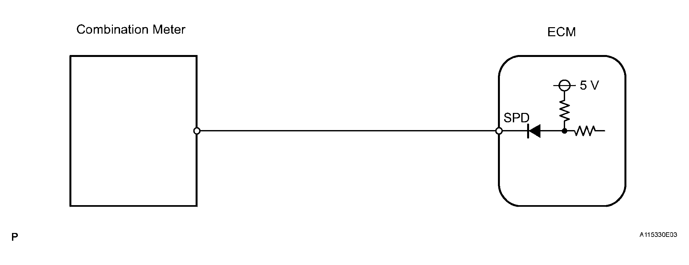

Home
>>
Scion
>>
2006
>>
xB Standard
>>
Repair and Diagnosis
>>
Engine Performance
>>
Engine Control Systems
>>
Engine Control System (1NZ-FE)
>>
Parts Location
>>
DTC P0500 Vehicle Speed Sensor "A"
>>
Wiring Diagram
DTC P0500 Vehicle Speed Sensor "A": Wiring Diagram
Fig 1: Vehicle Speed Sensor Wiring Diagram

Courtesy of © TOYOTA, LICENSE AGREEMENT TMS1002